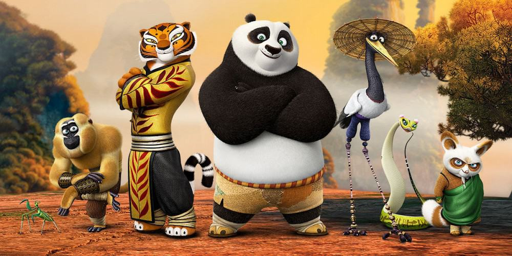

About Po
Po is the Main Chracter in the Kung Fu Panda series of Movies. Po who is a Big Fan Of Kungfu desperately wanted to see who from the furious 5 would become the Dragon Warrior. After His Attempts Are Unsuccessival, his shenanigans ends up in him being chosen as the Dragon Warrior.

Po when He Was Chosen Be Dragon Warrior
Po's Abilities
Enhanced Strength: Due to his weight and size along with his kung fu training, Po possess an incredible physical strength that makes him an dangerous opponent in hand-to-hand combat,he is able to send flying and lift enemies far more weight and taller than him.
Chao Wa Punch Kick: Po punches the mid area of the opponents body and then kicks, the strike of the Chao Wa Punch Kick causes immobilization of the body, meaning that it is possibly a nerve attack technique.
Po's Friends/Furious Five
Po and the Furious 5